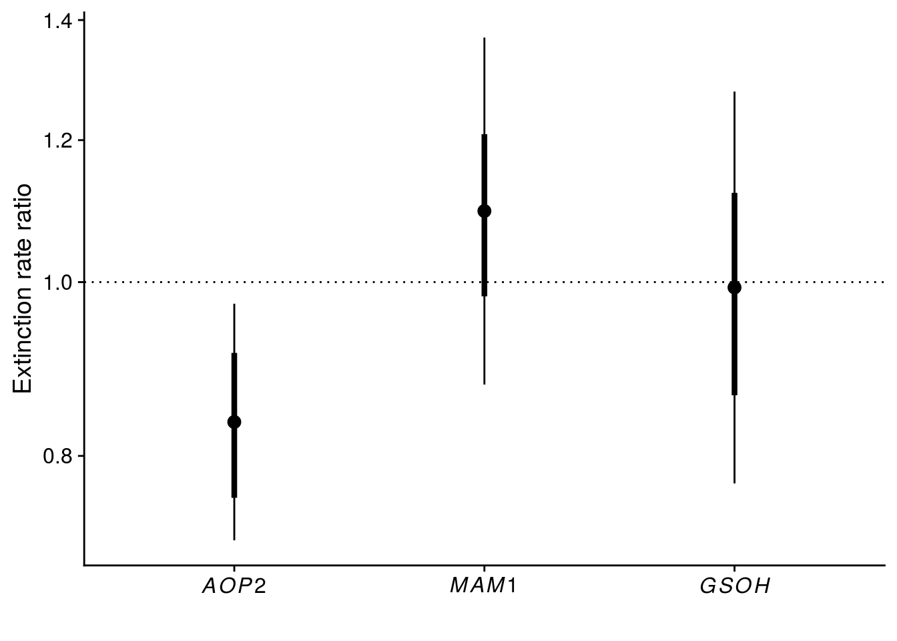
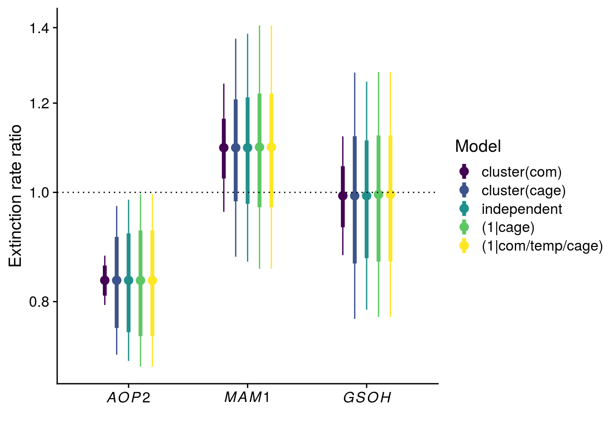

Last updated: 2021-06-24
Checks: 6 1
Knit directory: genes-to-foodweb-stability/
This reproducible R Markdown analysis was created with workflowr (version 1.6.2). The Checks tab describes the reproducibility checks that were applied when the results were created. The Past versions tab lists the development history.
The R Markdown is untracked by Git. To know which version of the R Markdown file created these results, you’ll want to first commit it to the Git repo. If you’re still working on the analysis, you can ignore this warning. When you’re finished, you can run wflow_publish to commit the R Markdown file and build the HTML.
Great job! The global environment was empty. Objects defined in the global environment can affect the analysis in your R Markdown file in unknown ways. For reproduciblity it’s best to always run the code in an empty environment.
The command set.seed(20200205) was run prior to running the code in the R Markdown file. Setting a seed ensures that any results that rely on randomness, e.g. subsampling or permutations, are reproducible.
Great job! Recording the operating system, R version, and package versions is critical for reproducibility.
Nice! There were no cached chunks for this analysis, so you can be confident that you successfully produced the results during this run.
Great job! Using relative paths to the files within your workflowr project makes it easier to run your code on other machines.
Great! You are using Git for version control. Tracking code development and connecting the code version to the results is critical for reproducibility.
The results in this page were generated with repository version 1955523. See the Past versions tab to see a history of the changes made to the R Markdown and HTML files.
Note that you need to be careful to ensure that all relevant files for the analysis have been committed to Git prior to generating the results (you can use wflow_publish or wflow_git_commit). workflowr only checks the R Markdown file, but you know if there are other scripts or data files that it depends on. Below is the status of the Git repository when the results were generated:
Ignored files:
Ignored: .Rhistory
Ignored: .Rproj.user/
Ignored: code/.Rhistory
Ignored: output/.Rapp.history
Untracked files:
Untracked: .genes-to-foodweb-stability.Rproj.swp
Untracked: analysis/foodweb-persistence.Rmd
Untracked: analysis/foodweb-transitions.Rmd
Untracked: analysis/plant-growth-no-insects-lme.Rmd
Untracked: analysis/prep-timeseries.Rmd
Untracked: analysis/structural-stability.Rmd
Untracked: code/summarize_stability_metrics.R
Untracked: data/InsectAbundanceSurvival.csv
Untracked: data/insect_abundance_data_2018-09-26_underneathleaf.csv
Untracked: figures/MAR1-parameter-plot.pdf
Untracked: figures/aop2-genos-coxadjcurve.pdf
Untracked: figures/aop2-genotypes-multistate.pdf
Untracked: figures/cage-dynamics-20C.pdf
Untracked: figures/cage-dynamics-23C.pdf
Untracked: figures/keystone-coxadjcurve.pdf
Untracked: figures/keystone-effect-model-comparison-ratio.pdf
Untracked: output/all.mar1.brm.adj.rds
Untracked: output/all.mar1.brm.unadj.ar2.lag.rds
Untracked: output/all.mar1.brm.unadj.noBRBRonLYER.rds
Untracked: output/all.mar1.brm.unadj.rds
Untracked: output/all.mar1.brm.unadj.xAOP2.rds
Untracked: output/initial.mar1.brm.adj.rds
Untracked: output/initial.mar1.brm.unadj.rds
Untracked: output/time-series-data.RData
Unstaged changes:
Modified: README.md
Deleted: analysis/about.Rmd
Deleted: analysis/community-persistence-keystone.Rmd
Deleted: analysis/critical-transitions-keystone.Rmd
Modified: analysis/index.Rmd
Deleted: analysis/plant-growth-no-insects.Rmd
Deleted: analysis/structural-stability-keystone.Rmd
Deleted: code/AOP2-LYER-Ptoid-persistence.R
Modified: code/README.md
Deleted: code/glm-ftest.R
Modified: code/plot-feasibility-domain.R
Deleted: code/prep-time-series.R
Modified: code/simulate-community-dynamics.R
Deleted: code/temperature-structural-stability-fig.R
Modified: data/README.md
Deleted: data/arabidopsis_clean_df.csv
Modified: figures/AOP2-growth-no-insects.pdf
Modified: figures/MAR1-nonequilibrium-foodchain-AOP2.pdf
Deleted: figures/MAR1-nonequilibrium-initial-temp.pdf
Modified: figures/MAR1-posterior-foodchain-AOP2.pdf
Deleted: figures/MAR1-posterior-initial-temp.pdf
Deleted: figures/initial-foodweb-structural-stability.png
Modified: figures/keystone-gene.pdf
Modified: figures/keystone-structural-stability-forkeynote.pdf
Modified: output/README.md
Deleted: output/full.mv.norm.brm.keystone.rds
Deleted: output/plant-growth-no-insects.RData
Deleted: output/reduced.1.brm.keystone.rds
Deleted: output/reduced.2.brm.keystone.rds
Deleted: output/reduced.3.brm.keystone.rds
Deleted: output/reduced.4.brm.keystone.rds
Deleted: output/reduced.5.brm.keystone.rds
Deleted: output/reduced.6.brm.keystone.rds
Deleted: output/timeseries_df.csv
Note that any generated files, e.g. HTML, png, CSS, etc., are not included in this status report because it is ok for generated content to have uncommitted changes.
There are no past versions. Publish this analysis with wflow_publish() to start tracking its development.
# Load and manage data
df <- read_csv("data/InsectAbundanceSurvival.csv") %>%
# renaming for brevity
rename(cage = Cage,
com = Composition,
week = Week,
temp = Temperature,
rich = Richness) %>%
mutate(cage = as.character(cage),
temp = ifelse(temp=="20 C", 0, 3), # put on scale such that coef corresponds to 1 C increase
temp_com = paste(temp, com)) %>% # create indicator for genetic composition nested within temperature for random effect
arrange(cage, week)
# create data for survival analysis
survival_df <- df %>%
# counter information is not relevant for survival (because it is the same), so we summarise across it
group_by(cage, week, temp, rich, Col, gsm1, AOP2, AOP2.gsoh, com, temp_com) %>%
summarise_at(vars(BRBR_Survival, LYER_Survival, Mummy_Ptoids_Survival), list(mean)) %>%
ungroup() %>%
mutate(week_since = week - 2) %>% # week since the full community was added (at week 3)
filter(week_since > 0) %>%
mutate(interval_start = week_since - 1,
interval_stop = week_since) %>%
#select(-week_since) %>% # no longer needed, replaced by interval_start(stop)
# contrasts for allelic effects at each gene
mutate(aop2_vs_AOP2 = Col + gsm1 - AOP2 - AOP2.gsoh,
mam1_vs_MAM1 = gsm1 - Col,
gsoh_vs_GSOH = AOP2.gsoh - AOP2)
## species specific data sets ----
# these will be recombined later to assess extinction across species
# these are in "person-period" format, which is most suitable for discrete-time survival analysis
# note that we transform them to make them appropriate for the continuous-time Cox model.
# BRBR
BRBR_survival_df <- survival_df %>%
select(-LYER_Survival, -Mummy_Ptoids_Survival) %>%
na.omit() %>%
mutate(Extinction = ifelse(BRBR_Survival == 1, 0, 1))
# LYER
LYER_survival_df <- survival_df %>%
select(-BRBR_Survival, -Mummy_Ptoids_Survival) %>%
na.omit() %>%
mutate(Extinction = ifelse(LYER_Survival == 1, 0, 1))
# Ptoid
Ptoid_survival_df <- survival_df %>%
select(-BRBR_Survival, -LYER_Survival) %>%
na.omit() %>%
mutate(Extinction = ifelse(Mummy_Ptoids_Survival == 1, 0, 1))
# merge species
all_survival_df <- bind_rows(
mutate(BRBR_survival_df, species = "BRBR"),
mutate(LYER_survival_df, species = "LYER"),
mutate(Ptoid_survival_df, species = "Ptoid"))
## create data for cox analysis (continuous time) ----
# BRBR
BRBR_cox_df <- BRBR_survival_df %>%
arrange(cage, week) %>%
group_by(cage) %>%
summarise(across(everything(), last))
sum(BRBR_cox_df$Extinction) # 60, as it should be[1] 60select(BRBR_cox_df, com, cage, week_since, Extinction) %>% data.frame() # good, no zeros com cage week_since Extinction
1 AOP2_AOP2.gsoh 1 5 1
2 gsm1_AOP2.gsoh 10 5 1
3 gsm1_AOP2 11 5 1
4 Poly 12 5 1
5 Poly 13 4 1
6 Col 14 6 1
7 AOP2.gsoh 15 5 1
8 Col_gsm1 16 5 1
9 gsm1_AOP2 17 6 1
10 Col_AOP2.gsoh 18 5 1
11 AOP2_AOP2.gsoh 19 5 1
12 Poly 2 7 1
13 gsm1_AOP2 20 5 1
14 Col_AOP2 21 5 1
15 AOP2.gsoh 22 5 1
16 AOP2_AOP2.gsoh 23 5 1
17 gsm1 24 6 1
18 AOP2 25 4 1
19 Col 26 5 1
20 Col_AOP2 27 5 1
21 Col_AOP2.gsoh 28 4 1
22 gsm1_AOP2.gsoh 29 4 1
23 gsm1_AOP2.gsoh 3 5 1
24 Col_gsm1 30 6 1
25 gsm1_AOP2 31 5 1
26 Col 32 3 1
27 Col 33 3 1
28 Col_AOP2.gsoh 34 4 1
29 AOP2_AOP2.gsoh 35 4 1
30 gsm1_AOP2.gsoh 36 2 1
31 gsm1_AOP2.gsoh 37 4 1
32 Poly 38 2 1
33 gsm1 39 5 1
34 AOP2 4 5 1
35 gsm1_AOP2.gsoh 40 2 1
36 Col_AOP2 41 6 1
37 Col_AOP2 42 4 1
38 Poly 43 4 1
39 AOP2 44 5 1
40 Col_gsm1 45 4 1
41 Poly 46 4 1
42 gsm1_AOP2 47 2 1
43 AOP2_AOP2.gsoh 48 4 1
44 Col_gsm1 49 5 1
45 gsm1 5 6 1
46 Col_AOP2 50 4 1
47 gsm1 51 3 1
48 AOP2 52 3 1
49 Poly 53 6 1
50 AOP2.gsoh 54 2 1
51 Col_AOP2.gsoh 55 5 1
52 AOP2.gsoh 56 4 1
53 AOP2_AOP2.gsoh 57 4 1
54 Col_AOP2.gsoh 58 3 1
55 Col_gsm1 59 3 1
56 Col_AOP2 6 5 1
57 gsm1_AOP2 60 3 1
58 Poly 7 5 1
59 Col_AOP2.gsoh 8 4 1
60 Col_gsm1 9 5 1# LYER
LYER_cox_df <- LYER_survival_df %>%
arrange(cage, week) %>%
group_by(cage) %>%
summarise(across(everything(), last))
sum(LYER_cox_df$Extinction) # 28, as it should be[1] 28select(LYER_cox_df, com, cage, week_since, Extinction) %>% data.frame() # good, all zeros correspond to week 15, the last week of the experiment in terms of 'week_since' com cage week_since Extinction
1 AOP2_AOP2.gsoh 1 5 1
2 gsm1_AOP2.gsoh 10 5 1
3 gsm1_AOP2 11 5 1
4 Poly 12 15 0
5 Poly 13 15 0
6 Col 14 15 0
7 AOP2.gsoh 15 13 1
8 Col_gsm1 16 5 1
9 gsm1_AOP2 17 15 0
10 Col_AOP2.gsoh 18 14 1
11 AOP2_AOP2.gsoh 19 5 1
12 Poly 2 7 1
13 gsm1_AOP2 20 15 0
14 Col_AOP2 21 5 1
15 AOP2.gsoh 22 15 0
16 AOP2_AOP2.gsoh 23 15 0
17 gsm1 24 6 1
18 AOP2 25 6 1
19 Col 26 6 1
20 Col_AOP2 27 6 1
21 Col_AOP2.gsoh 28 6 1
22 gsm1_AOP2.gsoh 29 13 1
23 gsm1_AOP2.gsoh 3 5 1
24 Col_gsm1 30 15 0
25 gsm1_AOP2 31 15 0
26 Col 32 15 0
27 Col 33 15 0
28 Col_AOP2.gsoh 34 15 0
29 AOP2_AOP2.gsoh 35 15 0
30 gsm1_AOP2.gsoh 36 13 1
31 gsm1_AOP2.gsoh 37 15 0
32 Poly 38 15 0
33 gsm1 39 15 0
34 AOP2 4 15 0
35 gsm1_AOP2.gsoh 40 15 0
36 Col_AOP2 41 15 0
37 Col_AOP2 42 5 1
38 Poly 43 15 0
39 AOP2 44 5 1
40 Col_gsm1 45 15 0
41 Poly 46 15 0
42 gsm1_AOP2 47 15 0
43 AOP2_AOP2.gsoh 48 15 0
44 Col_gsm1 49 15 0
45 gsm1 5 15 0
46 Col_AOP2 50 15 0
47 gsm1 51 5 1
48 AOP2 52 15 0
49 Poly 53 15 0
50 AOP2.gsoh 54 13 1
51 Col_AOP2.gsoh 55 6 1
52 AOP2.gsoh 56 5 1
53 AOP2_AOP2.gsoh 57 5 1
54 Col_AOP2.gsoh 58 15 0
55 Col_gsm1 59 15 0
56 Col_AOP2 6 14 1
57 gsm1_AOP2 60 5 1
58 Poly 7 7 1
59 Col_AOP2.gsoh 8 6 1
60 Col_gsm1 9 15 0# Ptoid
Ptoid_cox_df <- Ptoid_survival_df %>%
arrange(cage, week) %>%
group_by(cage) %>%
summarise(across(everything(), last))
sum(Ptoid_cox_df$Extinction) # 53, as it should be[1] 53select(Ptoid_cox_df, com, cage, week_since, Extinction) %>% data.frame() # good, all zeros correspond to week 15 com cage week_since Extinction
1 AOP2_AOP2.gsoh 1 6 1
2 gsm1_AOP2.gsoh 10 6 1
3 gsm1_AOP2 11 6 1
4 Poly 12 15 0
5 Poly 13 15 0
6 Col 14 8 1
7 AOP2.gsoh 15 14 1
8 Col_gsm1 16 7 1
9 gsm1_AOP2 17 7 1
10 Col_AOP2.gsoh 18 15 1
11 AOP2_AOP2.gsoh 19 7 1
12 Poly 2 9 1
13 gsm1_AOP2 20 11 1
14 Col_AOP2 21 6 1
15 AOP2.gsoh 22 6 1
16 AOP2_AOP2.gsoh 23 14 1
17 gsm1 24 7 1
18 AOP2 25 8 1
19 Col 26 7 1
20 Col_AOP2 27 8 1
21 Col_AOP2.gsoh 28 7 1
22 gsm1_AOP2.gsoh 29 13 1
23 gsm1_AOP2.gsoh 3 6 1
24 Col_gsm1 30 12 1
25 gsm1_AOP2 31 12 1
26 Col 32 13 1
27 Col 33 8 1
28 Col_AOP2.gsoh 34 7 1
29 AOP2_AOP2.gsoh 35 5 1
30 gsm1_AOP2.gsoh 36 13 1
31 gsm1_AOP2.gsoh 37 15 0
32 Poly 38 12 1
33 gsm1 39 7 1
34 AOP2 4 7 1
35 gsm1_AOP2.gsoh 40 14 1
36 Col_AOP2 41 8 1
37 Col_AOP2 42 5 1
38 Poly 43 10 1
39 AOP2 44 6 1
40 Col_gsm1 45 15 0
41 Poly 46 6 1
42 gsm1_AOP2 47 13 1
43 AOP2_AOP2.gsoh 48 7 1
44 Col_gsm1 49 11 1
45 gsm1 5 14 1
46 Col_AOP2 50 15 0
47 gsm1 51 6 1
48 AOP2 52 9 1
49 Poly 53 15 0
50 AOP2.gsoh 54 14 1
51 Col_AOP2.gsoh 55 8 1
52 AOP2.gsoh 56 6 1
53 AOP2_AOP2.gsoh 57 7 1
54 Col_AOP2.gsoh 58 15 0
55 Col_gsm1 59 10 1
56 Col_AOP2 6 14 1
57 gsm1_AOP2 60 6 1
58 Poly 7 6 1
59 Col_AOP2.gsoh 8 6 1
60 Col_gsm1 9 13 1# merge continuous data
all_cox_df <- bind_rows(
mutate(BRBR_cox_df, species = "BRBR"),
mutate(LYER_cox_df, species = "LYER"),
mutate(Ptoid_cox_df, species = "Ptoid")) %>%
select(cage, temp:temp_com, week_since, aop2_vs_AOP2:gsoh_vs_GSOH, species, Extinction) %>%
mutate(temp_species = paste(temp, species)) %>%
arrange(cage)
# all looks good
select(all_cox_df, cage, species, week_since, Extinction) %>% data.frame() cage species week_since Extinction
1 1 BRBR 5 1
2 1 LYER 5 1
3 1 Ptoid 6 1
4 10 BRBR 5 1
5 10 LYER 5 1
6 10 Ptoid 6 1
7 11 BRBR 5 1
8 11 LYER 5 1
9 11 Ptoid 6 1
10 12 BRBR 5 1
11 12 LYER 15 0
12 12 Ptoid 15 0
13 13 BRBR 4 1
14 13 LYER 15 0
15 13 Ptoid 15 0
16 14 BRBR 6 1
17 14 LYER 15 0
18 14 Ptoid 8 1
19 15 BRBR 5 1
20 15 LYER 13 1
21 15 Ptoid 14 1
22 16 BRBR 5 1
23 16 LYER 5 1
24 16 Ptoid 7 1
25 17 BRBR 6 1
26 17 LYER 15 0
27 17 Ptoid 7 1
28 18 BRBR 5 1
29 18 LYER 14 1
30 18 Ptoid 15 1
31 19 BRBR 5 1
32 19 LYER 5 1
33 19 Ptoid 7 1
34 2 BRBR 7 1
35 2 LYER 7 1
36 2 Ptoid 9 1
37 20 BRBR 5 1
38 20 LYER 15 0
39 20 Ptoid 11 1
40 21 BRBR 5 1
41 21 LYER 5 1
42 21 Ptoid 6 1
43 22 BRBR 5 1
44 22 LYER 15 0
45 22 Ptoid 6 1
46 23 BRBR 5 1
47 23 LYER 15 0
48 23 Ptoid 14 1
49 24 BRBR 6 1
50 24 LYER 6 1
51 24 Ptoid 7 1
52 25 BRBR 4 1
53 25 LYER 6 1
54 25 Ptoid 8 1
55 26 BRBR 5 1
56 26 LYER 6 1
57 26 Ptoid 7 1
58 27 BRBR 5 1
59 27 LYER 6 1
60 27 Ptoid 8 1
61 28 BRBR 4 1
62 28 LYER 6 1
63 28 Ptoid 7 1
64 29 BRBR 4 1
65 29 LYER 13 1
66 29 Ptoid 13 1
67 3 BRBR 5 1
68 3 LYER 5 1
69 3 Ptoid 6 1
70 30 BRBR 6 1
71 30 LYER 15 0
72 30 Ptoid 12 1
73 31 BRBR 5 1
74 31 LYER 15 0
75 31 Ptoid 12 1
76 32 BRBR 3 1
77 32 LYER 15 0
78 32 Ptoid 13 1
79 33 BRBR 3 1
80 33 LYER 15 0
81 33 Ptoid 8 1
82 34 BRBR 4 1
83 34 LYER 15 0
84 34 Ptoid 7 1
85 35 BRBR 4 1
86 35 LYER 15 0
87 35 Ptoid 5 1
88 36 BRBR 2 1
89 36 LYER 13 1
90 36 Ptoid 13 1
91 37 BRBR 4 1
92 37 LYER 15 0
93 37 Ptoid 15 0
94 38 BRBR 2 1
95 38 LYER 15 0
96 38 Ptoid 12 1
97 39 BRBR 5 1
98 39 LYER 15 0
99 39 Ptoid 7 1
100 4 BRBR 5 1
101 4 LYER 15 0
102 4 Ptoid 7 1
103 40 BRBR 2 1
104 40 LYER 15 0
105 40 Ptoid 14 1
106 41 BRBR 6 1
107 41 LYER 15 0
108 41 Ptoid 8 1
109 42 BRBR 4 1
110 42 LYER 5 1
111 42 Ptoid 5 1
112 43 BRBR 4 1
113 43 LYER 15 0
114 43 Ptoid 10 1
115 44 BRBR 5 1
116 44 LYER 5 1
117 44 Ptoid 6 1
118 45 BRBR 4 1
119 45 LYER 15 0
120 45 Ptoid 15 0
121 46 BRBR 4 1
122 46 LYER 15 0
123 46 Ptoid 6 1
124 47 BRBR 2 1
125 47 LYER 15 0
126 47 Ptoid 13 1
127 48 BRBR 4 1
128 48 LYER 15 0
129 48 Ptoid 7 1
130 49 BRBR 5 1
131 49 LYER 15 0
132 49 Ptoid 11 1
133 5 BRBR 6 1
134 5 LYER 15 0
135 5 Ptoid 14 1
136 50 BRBR 4 1
137 50 LYER 15 0
138 50 Ptoid 15 0
139 51 BRBR 3 1
140 51 LYER 5 1
141 51 Ptoid 6 1
142 52 BRBR 3 1
143 52 LYER 15 0
144 52 Ptoid 9 1
145 53 BRBR 6 1
146 53 LYER 15 0
147 53 Ptoid 15 0
148 54 BRBR 2 1
149 54 LYER 13 1
150 54 Ptoid 14 1
151 55 BRBR 5 1
152 55 LYER 6 1
153 55 Ptoid 8 1
154 56 BRBR 4 1
155 56 LYER 5 1
156 56 Ptoid 6 1
157 57 BRBR 4 1
158 57 LYER 5 1
159 57 Ptoid 7 1
160 58 BRBR 3 1
161 58 LYER 15 0
162 58 Ptoid 15 0
163 59 BRBR 3 1
164 59 LYER 15 0
165 59 Ptoid 10 1
166 6 BRBR 5 1
167 6 LYER 14 1
168 6 Ptoid 14 1
169 60 BRBR 3 1
170 60 LYER 5 1
171 60 Ptoid 6 1
172 7 BRBR 5 1
173 7 LYER 7 1
174 7 Ptoid 6 1
175 8 BRBR 4 1
176 8 LYER 6 1
177 8 Ptoid 6 1
178 9 BRBR 5 1
179 9 LYER 15 0
180 9 Ptoid 13 1# data is 180 rows as it should (60 cages * 3 species)Fit initial model:
# initial model, proportional hazards assumption
cox.zph(coxph(Surv(week_since, Extinction) ~ strata(species) + temp + rich + aop2_vs_AOP2 + mam1_vs_MAM1 + gsoh_vs_GSOH + cluster(cage), all_cox_df)) chisq df p
temp 16.3770 1 5.2e-05
rich 1.6218 1 0.2028
aop2_vs_AOP2 0.2124 1 0.6449
mam1_vs_MAM1 0.0153 1 0.9016
gsoh_vs_GSOH 0.8070 1 0.3690
GLOBAL 19.4939 5 0.0016# clear evidence that temperature violates the proportional hazards assumption
cox.zph(coxph(Surv(week_since, Extinction) ~ strata(species, temp) + rich + aop2_vs_AOP2 + mam1_vs_MAM1 + gsoh_vs_GSOH + cluster(cage), all_cox_df)) chisq df p
rich 1.5014 1 0.22
aop2_vs_AOP2 0.3637 1 0.55
mam1_vs_MAM1 0.0599 1 0.81
gsoh_vs_GSOH 0.9284 1 0.34
GLOBAL 3.1254 4 0.54# proportional hazards assumption is met for the global model and each covariate.Since our temperature treatment violated the proportional hazards assumption, we stratified by species and temperature in subsequent models. Note that we don’t have to retest the cox proportional hazards assumption because the strata remain the same and clustering doesn’t affect this test.
# cluster at com level, for testing genetic effects
coxph_com <- coxph(Surv(week_since, Extinction) ~ strata(species, temp) + rich + aop2_vs_AOP2 + mam1_vs_MAM1 + gsoh_vs_GSOH + cluster(com), all_cox_df)
summary(coxph_com)Call:
coxph(formula = Surv(week_since, Extinction) ~ strata(species,
temp) + rich + aop2_vs_AOP2 + mam1_vs_MAM1 + gsoh_vs_GSOH,
data = all_cox_df, cluster = com)
n= 180, number of events= 141
coef exp(coef) se(coef) robust se z Pr(>|z|)
rich -0.21420 0.80719 0.09790 0.04749 -4.511 6.46e-06 ***
aop2_vs_AOP2 -0.18041 0.83493 0.08381 0.02544 -7.091 1.33e-12 ***
mam1_vs_MAM1 0.01012 1.01018 0.11840 0.06118 0.165 0.869
gsoh_vs_GSOH 0.06452 1.06665 0.11853 0.06912 0.934 0.351
---
Signif. codes: 0 '***' 0.001 '**' 0.01 '*' 0.05 '.' 0.1 ' ' 1
exp(coef) exp(-coef) lower .95 upper .95
rich 0.8072 1.2389 0.7354 0.8859
aop2_vs_AOP2 0.8349 1.1977 0.7943 0.8776
mam1_vs_MAM1 1.0102 0.9899 0.8960 1.1389
gsoh_vs_GSOH 1.0667 0.9375 0.9315 1.2214
Concordance= 0.6 (se = 0.021 )
Likelihood ratio test= 10.11 on 4 df, p=0.04
Wald test = 100.8 on 4 df, p=<2e-16
Score (logrank) test = 10.13 on 4 df, p=0.04, Robust = 5.78 p=0.2
(Note: the likelihood ratio and score tests assume independence of
observations within a cluster, the Wald and robust score tests do not).# cluster at cage
coxph_cage <- coxph(Surv(week_since, Extinction) ~ strata(species, temp) + rich + aop2_vs_AOP2 + mam1_vs_MAM1 + gsoh_vs_GSOH + cluster(cage), all_cox_df)
summary(coxph_cage) # output for Table S1Call:
coxph(formula = Surv(week_since, Extinction) ~ strata(species,
temp) + rich + aop2_vs_AOP2 + mam1_vs_MAM1 + gsoh_vs_GSOH,
data = all_cox_df, cluster = cage)
n= 180, number of events= 141
coef exp(coef) se(coef) robust se z Pr(>|z|)
rich -0.21420 0.80719 0.09790 0.10219 -2.096 0.0361 *
aop2_vs_AOP2 -0.18041 0.83493 0.08381 0.07740 -2.331 0.0198 *
mam1_vs_MAM1 0.01012 1.01018 0.11840 0.12852 0.079 0.9372
gsoh_vs_GSOH 0.06452 1.06665 0.11853 0.11327 0.570 0.5689
---
Signif. codes: 0 '***' 0.001 '**' 0.01 '*' 0.05 '.' 0.1 ' ' 1
exp(coef) exp(-coef) lower .95 upper .95
rich 0.8072 1.2389 0.6607 0.9862
aop2_vs_AOP2 0.8349 1.1977 0.7174 0.9717
mam1_vs_MAM1 1.0102 0.9899 0.7852 1.2996
gsoh_vs_GSOH 1.0667 0.9375 0.8543 1.3318
Concordance= 0.6 (se = 0.034 )
Likelihood ratio test= 10.11 on 4 df, p=0.04
Wald test = 11.62 on 4 df, p=0.02
Score (logrank) test = 10.13 on 4 df, p=0.04, Robust = 9.5 p=0.05
(Note: the likelihood ratio and score tests assume independence of
observations within a cluster, the Wald and robust score tests do not).# show that AICc gives same inference to satisfy a reviewer
AICcmodavg::aictab(list(full = coxph_cage,
reduced = update(coxph_cage, .~. -mam1_vs_MAM1 -gsoh_vs_GSOH),
null = update(coxph_cage, .~. -mam1_vs_MAM1 -gsoh_vs_GSOH -rich -aop2_vs_AOP2)))
Model selection based on AICc:
K AICc Delta_AICc AICcWt Cum.Wt LL
reduced 2 753.43 0.00 0.83 0.83 -374.68
full 4 757.29 3.86 0.12 0.95 -374.53
null 0 759.17 5.74 0.05 1.00 -379.59# account for aop2 genotype effect first
summary(coxph(Surv(week_since, Extinction) ~ strata(species, temp) + I(Col+gsm1) + rich + cluster(cage), all_cox_df))Call:
coxph(formula = Surv(week_since, Extinction) ~ strata(species,
temp) + I(Col + gsm1) + rich, data = all_cox_df, cluster = cage)
n= 180, number of events= 141
coef exp(coef) se(coef) robust se z Pr(>|z|)
I(Col + gsm1) -0.36235 0.69604 0.16765 0.15454 -2.345 0.019 *
rich -0.03492 0.96568 0.12958 0.13573 -0.257 0.797
---
Signif. codes: 0 '***' 0.001 '**' 0.01 '*' 0.05 '.' 0.1 ' ' 1
exp(coef) exp(-coef) lower .95 upper .95
I(Col + gsm1) 0.6960 1.437 0.5142 0.9423
rich 0.9657 1.036 0.7401 1.2600
Concordance= 0.576 (se = 0.034 )
Likelihood ratio test= 9.81 on 2 df, p=0.007
Wald test = 11.56 on 2 df, p=0.003
Score (logrank) test = 9.77 on 2 df, p=0.008, Robust = 9.01 p=0.01
(Note: the likelihood ratio and score tests assume independence of
observations within a cluster, the Wald and robust score tests do not).# cluster at cage, interactions with strata
coxph_cage_by_tempstrata <- coxph(Surv(week_since, Extinction) ~ strata(species) + strata(temp)*(rich + aop2_vs_AOP2 + mam1_vs_MAM1 + gsoh_vs_GSOH) + cluster(cage), all_cox_df)
# assume each row of data is independent (which of course isn't true, 3 species per cage)
coxph_indep <- coxph(Surv(week_since, Extinction) ~ strata(species, temp) + rich + aop2_vs_AOP2 + mam1_vs_MAM1 + gsoh_vs_GSOH, all_cox_df)
summary(coxph_indep)Call:
coxph(formula = Surv(week_since, Extinction) ~ strata(species,
temp) + rich + aop2_vs_AOP2 + mam1_vs_MAM1 + gsoh_vs_GSOH,
data = all_cox_df)
n= 180, number of events= 141
coef exp(coef) se(coef) z Pr(>|z|)
rich -0.21420 0.80719 0.09790 -2.188 0.0287 *
aop2_vs_AOP2 -0.18041 0.83493 0.08381 -2.153 0.0313 *
mam1_vs_MAM1 0.01012 1.01018 0.11840 0.086 0.9319
gsoh_vs_GSOH 0.06452 1.06665 0.11853 0.544 0.5862
---
Signif. codes: 0 '***' 0.001 '**' 0.01 '*' 0.05 '.' 0.1 ' ' 1
exp(coef) exp(-coef) lower .95 upper .95
rich 0.8072 1.2389 0.6663 0.9779
aop2_vs_AOP2 0.8349 1.1977 0.7085 0.9840
mam1_vs_MAM1 1.0102 0.9899 0.8010 1.2740
gsoh_vs_GSOH 1.0667 0.9375 0.8455 1.3456
Concordance= 0.6 (se = 0.033 )
Likelihood ratio test= 10.11 on 4 df, p=0.04
Wald test = 9.98 on 4 df, p=0.04
Score (logrank) test = 10.13 on 4 df, p=0.04anova(coxph_indep)Analysis of Deviance Table
Cox model: response is Surv(week_since, Extinction)
Terms added sequentially (first to last)
loglik Chisq Df Pr(>|Chi|)
NULL -379.59
rich -377.03 5.1170 1 0.02369 *
aop2_vs_AOP2 -374.68 4.6907 1 0.03033 *
mam1_vs_MAM1 -374.68 0.0067 1 0.93458
gsoh_vs_GSOH -374.53 0.2968 1 0.58591
---
Signif. codes: 0 '***' 0.001 '**' 0.01 '*' 0.05 '.' 0.1 ' ' 1# note that likelihood estimates are the same among all coxph models, clearly indicating that the likelihood ratio test doesn't account for clustered variables
coxph_com$loglik[1] -379.5863 -374.5307coxph_cage$loglik[1] -379.5863 -374.5307coxph_indep$loglik[1] -379.5863 -374.5307# random effect of cage
coxme_cage <- coxme(Surv(week_since, Extinction) ~ strata(species, temp) + rich + aop2_vs_AOP2 + mam1_vs_MAM1 + gsoh_vs_GSOH + (1|cage), all_cox_df)
summary(coxme_cage)Cox mixed-effects model fit by maximum likelihood
Data: all_cox_df
events, n = 141, 180
Iterations= 34 140
NULL Integrated Fitted
Log-likelihood -379.5863 -374.3922 -366.9619
Chisq df p AIC BIC
Integrated loglik 10.39 5.00 0.0649550 0.39 -14.36
Penalized loglik 25.25 10.58 0.0067406 4.08 -27.13
Model: Surv(week_since, Extinction) ~ strata(species, temp) + rich + aop2_vs_AOP2 + mam1_vs_MAM1 + gsoh_vs_GSOH + (1 | cage)
Fixed coefficients
coef exp(coef) se(coef) z p
rich -0.21676208 0.8051215 0.10631525 -2.04 0.041
aop2_vs_AOP2 -0.18045249 0.8348923 0.09036422 -2.00 0.046
mam1_vs_MAM1 0.01431872 1.0144217 0.12821734 0.11 0.910
gsoh_vs_GSOH 0.06442896 1.0665498 0.12752028 0.51 0.610
Random effects
Group Variable Std Dev Variance
cage Intercept 0.25342817 0.06422584# note that if we formally compare models, there is not clear evidence to include cage as a random effect
anova(coxph_cage, coxme_cage)Analysis of Deviance Table
Cox model: response is Surv(week_since, Extinction)
Model 1: ~strata(species, temp) + rich + aop2_vs_AOP2 + mam1_vs_MAM1 + gsoh_vs_GSOH
Model 2: ~strata(species, temp) + rich + aop2_vs_AOP2 + mam1_vs_MAM1 + gsoh_vs_GSOH + (1 | cage)
loglik Chisq Df P(>|Chi|)
1 -374.53
2 -374.39 0.277 1 0.5987# random effect of cage, com, and temp_com
coxme_allRE <- coxme(Surv(week_since, Extinction) ~ strata(species, temp) + rich + aop2_vs_AOP2 + mam1_vs_MAM1 + gsoh_vs_GSOH + (1|com/temp/cage), all_cox_df)
summary(coxme_allRE)Cox mixed-effects model fit by maximum likelihood
Data: all_cox_df
events, n = 141, 180
Iterations= 39 160
NULL Integrated Fitted
Log-likelihood -379.5863 -374.3927 -366.9249
Chisq df p AIC BIC
Integrated loglik 10.39 7.00 0.1676700 -3.61 -24.25
Penalized loglik 25.32 10.62 0.0066882 4.09 -27.22
Model: Surv(week_since, Extinction) ~ strata(species, temp) + rich + aop2_vs_AOP2 + mam1_vs_MAM1 + gsoh_vs_GSOH + (1 | com/temp/cage)
Fixed coefficients
coef exp(coef) se(coef) z p
rich -0.21677416 0.8051118 0.10636601 -2.04 0.042
aop2_vs_AOP2 -0.18045110 0.8348935 0.09040301 -2.00 0.046
mam1_vs_MAM1 0.01434004 1.0144434 0.12827428 0.11 0.910
gsoh_vs_GSOH 0.06442760 1.0665484 0.12757421 0.51 0.610
Random effects
Group Variable Std Dev Variance
com/temp/cage (Intercept) 2.541318e-01 6.458298e-02
com/temp (Intercept) 4.127459e-03 1.703592e-05
com (Intercept) 1.551489e-03 2.407118e-06# certainly not good evidence to support this more complex model
anova(coxme_cage, coxme_allRE)Analysis of Deviance Table
Cox model: response is Surv(week_since, Extinction)
Model 1: ~strata(species, temp) + rich + aop2_vs_AOP2 + mam1_vs_MAM1 + gsoh_vs_GSOH + (1 | cage)
Model 2: ~strata(species, temp) + rich + aop2_vs_AOP2 + mam1_vs_MAM1 + gsoh_vs_GSOH + (1 | com/temp/cage)
loglik Chisq Df P(>|Chi|)
1 -374.39
2 -374.39 9e-04 2 0.9996tidy_coxph_cage <- tidy(coxph_cage, exponentiate = T, conf.int = T, conf.level = 0.95) %>%
mutate(model = "cluster(cage)",
SE = robust.se)
plot_keystone_gene <- tidy_coxph_cage %>%
filter(term != "rich") %>%
ggplot(aes(x = term, y = estimate)) +
geom_point(size = 3) +
geom_linerange(aes(ymin = estimate - SE, ymax = estimate + SE), size = 1.5) +
geom_linerange(aes(ymin = conf.low, ymax = conf.high)) +
geom_hline(yintercept = 1, linetype = "dotted") +
scale_x_discrete(labels = c(expression(italic(AOP2)),expression(italic(MAM1)),expression(italic(GSOH)))) +
scale_y_continuous(name = expression("Extinction rate ratio"), trans = "log", breaks = c(0.8, 1.0, 1.2, 1.4)) +
xlab("")
x11(); plot_keystone_gene
#ggsave(plot = plot_keystone_gene, filename = "figures/keystone-gene.pdf", height = 5, width = 6)
tidy_coxph_com <- tidy(coxph_com, exponentiate = T, conf.int = T, conf.level = 0.95) %>%
mutate(model = "cluster(com)",
SE = robust.se)
tidy_coxph_indep <- tidy(coxph_indep, exponentiate = T, conf.int = T, conf.level = 0.95) %>%
mutate(model = "independent",
SE = std.error)
tidy_coxme_cage <- tidy(coxme_cage, exponentiate = T, conf.level = 0.95) %>%
mutate(model = "(1|cage)",
SE = std.error)
tidy_coxme_allRE <- tidy(coxme_allRE, exponentiate = T, conf.level = 0.95) %>%
mutate(model = "(1|com/temp/cage)",
SE = std.error)
plot_fig_S1 <- bind_rows(tidy_coxph_com, tidy_coxph_cage, tidy_coxph_indep, tidy_coxme_cage, tidy_coxme_allRE) %>%
mutate(model = factor(model, levels = c("cluster(com)","cluster(cage)","independent","(1|cage)","(1|com/temp/cage)"))) %>%
filter(term != "rich") %>%
ggplot(aes(x = term, y = estimate, group = model, color = model)) +
geom_point(size = 3, position = position_dodge(width = 0.5)) +
geom_linerange(aes(ymin = estimate - SE, ymax = estimate + SE), size = 1.5, position = position_dodge(width = 0.5)) +
geom_linerange(aes(ymin = conf.low, ymax = conf.high), position = position_dodge(width = 0.5)) +
geom_hline(yintercept = 1, linetype = "dotted") +
scale_x_discrete(labels = c(expression(italic(AOP2)),expression(italic(MAM1)),expression(italic(GSOH)))) +
#scale_y_continuous(name = expression("Effect on extinction rate "(Delta~"%")), trans = "log", breaks = c(0.8, 1.0, 1.2, 1.4), labels = c(-20,0,20,40)) + # -percent.pdf
scale_y_continuous(name = expression("Extinction rate ratio"), trans = "log", breaks = c(0.8, 1.0, 1.2, 1.4)) + # -ratio.pdf
scale_color_viridis_d(name = "Model") +
xlab("")
x11(); plot_fig_S1
#ggsave(plot = plot_fig_S1, filename = "figures/keystone-effect-model-comparison-ratio.pdf", height = 5, width = 6)
# need to convert to data frame from a tibble for plotting (known issue: https://github.com/kassambara/survminer/issues/501)
all_cox_df.df <- as.data.frame(all_cox_df) %>%
mutate(aop2_genos = Col+gsm1)
# add aop2 information to genetic composition
com_aop2 <- select(all_cox_df.df, variable = com, rich, aop2_genos, aop2_vs_AOP2) %>% distinct()
# get adjusted survival curves for each genetic composition
com_surv_adj <- surv_adjustedcurves(coxph(Surv(week_since, Extinction) ~ strata(temp, species) + com + cluster(cage), data = all_cox_df.df), variable = "com", method = "conditional") %>%
left_join(., com_aop2)Warning in .get_data(fit, data): The `data` argument is not provided. Data will
be extracted from model fit.aop2_surv_adj <- surv_adjustedcurves(coxph(Surv(week_since, Extinction) ~ strata(temp, species) + aop2_genos + cluster(cage), data = all_cox_df.df), variable = "aop2_genos", method = "conditional") %>%
mutate(aop2_genos = as.numeric(variable)-1)Warning in .get_data(fit, data): The `data` argument is not provided. Data will
be extracted from model fit.## Reproduce Fig. S2
# without rich = 4 to emphasize keystone gene effect
plot_fig_S2 <- com_surv_adj %>%
filter(rich != 4) %>%
mutate(frich = factor(rich, levels = c(1,2), labels = c("Richness = 1","Richness = 2"))) %>%
ggplot(aes(x = time+2, y = surv)) +
geom_step(aes(group = variable, color = aop2_vs_AOP2), size = 1) +
scale_color_viridis_c(breaks = c(-2,-1,0,1,2), name = "AOP2\u2013 vs. AOP2+") +
ylab("Survival probability") +
scale_x_continuous(name = "Week of experiment") + # , breaks = 2:17
facet_wrap(~frich, nrow = 1)
x11(); plot_fig_S2
#ggsave(plot = plot_fig_S2, filename = "figures/keystone-coxadjcurve.pdf", width = 6, height = 5, device=cairo_pdf)
## Reproduce Fig. S3
# ideal thing about this plot is that it properly adjusts for strata and it displays uncertainty at the level of genetic composition.
# confidence intervals from the kaplan meir plot are incorrect because they don't account for strata (this was confirmed by looking at survdiff log-rank test)
plot_fig_S3 <- ggplot(com_surv_adj, aes(x = time+2, y = surv)) +
geom_step(aes(group = variable, color = aop2_genos), alpha = 0.5) +
geom_step(data = aop2_surv_adj, aes(group = aop2_genos, color = aop2_genos), size = 1.5) +
scale_color_viridis_c(breaks = c(0,1,2), name = "AOP2\u2013\ngenotypes") +
ylab("Survival probability") +
scale_x_continuous(name = "Week of experiment", breaks = 2:17)x11(); plot_fig_S3
#ggsave(plot = plot_fig_S3, filename = "figures/aop2-genos-coxadjcurve.pdf", width = 6, height = 5, device=cairo_pdf)
sessionInfo()R version 4.1.0 (2021-05-18)
Platform: x86_64-pc-linux-gnu (64-bit)
Running under: Ubuntu 16.04.7 LTS
Matrix products: default
BLAS: /usr/lib/libblas/libblas.so.3.6.0
LAPACK: /usr/lib/lapack/liblapack.so.3.6.0
locale:
[1] LC_CTYPE=en_US.UTF-8 LC_NUMERIC=C
[3] LC_TIME=en_US.UTF-8 LC_COLLATE=en_US.UTF-8
[5] LC_MONETARY=en_US.UTF-8 LC_MESSAGES=en_US.UTF-8
[7] LC_PAPER=en_US.UTF-8 LC_NAME=C
[9] LC_ADDRESS=C LC_TELEPHONE=C
[11] LC_MEASUREMENT=en_US.UTF-8 LC_IDENTIFICATION=C
attached base packages:
[1] stats graphics grDevices utils datasets methods base
other attached packages:
[1] survMisc_0.5.5 ehahelper_0.3.9999 broom_0.7.6 survminer_0.4.9
[5] ggpubr_0.4.0 coxme_2.2-16 bdsmatrix_1.3-4 survival_3.2-11
[9] cowplot_1.1.1 forcats_0.5.1 stringr_1.4.0 dplyr_1.0.6
[13] purrr_0.3.4 readr_1.4.0 tidyr_1.1.3 tibble_3.1.2
[17] ggplot2_3.3.3 tidyverse_1.3.1 workflowr_1.6.2
loaded via a namespace (and not attached):
[1] nlme_3.1-152 fs_1.5.0 lubridate_1.7.10 httr_1.4.2
[5] rprojroot_2.0.2 tools_4.1.0 backports_1.2.1 bslib_0.2.5.1
[9] utf8_1.2.1 R6_2.5.0 DBI_1.1.1 colorspace_2.0-1
[13] raster_3.4-10 sp_1.4-5 withr_2.4.2 tidyselect_1.1.1
[17] gridExtra_2.3 curl_4.3.1 compiler_4.1.0 git2r_0.28.0
[21] cli_2.5.0 rvest_1.0.0 xml2_1.3.2 labeling_0.4.2
[25] unmarked_1.1.1 sass_0.4.0 scales_1.1.1 AICcmodavg_2.3-1
[29] digest_0.6.27 foreign_0.8-81 rmarkdown_2.8 rio_0.5.26
[33] pkgconfig_2.0.3 htmltools_0.5.1.1 highr_0.9 dbplyr_2.1.1
[37] rlang_0.4.11 readxl_1.3.1 VGAM_1.1-5 rstudioapi_0.13
[41] farver_2.1.0 jquerylib_0.1.4 generics_0.1.0 zoo_1.8-9
[45] jsonlite_1.7.2 zip_2.2.0 car_3.0-10 magrittr_2.0.1
[49] Matrix_1.3-4 Rcpp_1.0.6 munsell_0.5.0 fansi_0.5.0
[53] abind_1.4-5 lifecycle_1.0.0 stringi_1.6.2 yaml_2.2.1
[57] carData_3.0-4 MASS_7.3-54 plyr_1.8.6 grid_4.1.0
[61] parallel_4.1.0 promises_1.2.0.1 crayon_1.4.1 lattice_0.20-44
[65] haven_2.4.1 splines_4.1.0 hms_1.1.0 knitr_1.33
[69] pillar_1.6.1 ggsignif_0.6.2 codetools_0.2-18 stats4_4.1.0
[73] eha_2.9.0 reprex_2.0.0 glue_1.4.2 evaluate_0.14
[77] data.table_1.14.0 modelr_0.1.8 vctrs_0.3.8 httpuv_1.6.1
[81] cellranger_1.1.0 gtable_0.3.0 km.ci_0.5-2 assertthat_0.2.1
[85] xfun_0.23 openxlsx_4.2.4 xtable_1.8-3 rstatix_0.7.0
[89] later_1.2.0 viridisLite_0.4.0 KMsurv_0.1-5 ellipsis_0.3.2